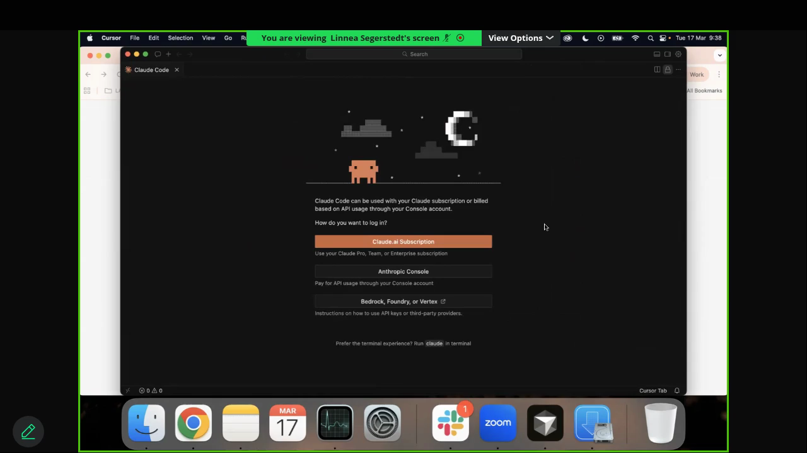
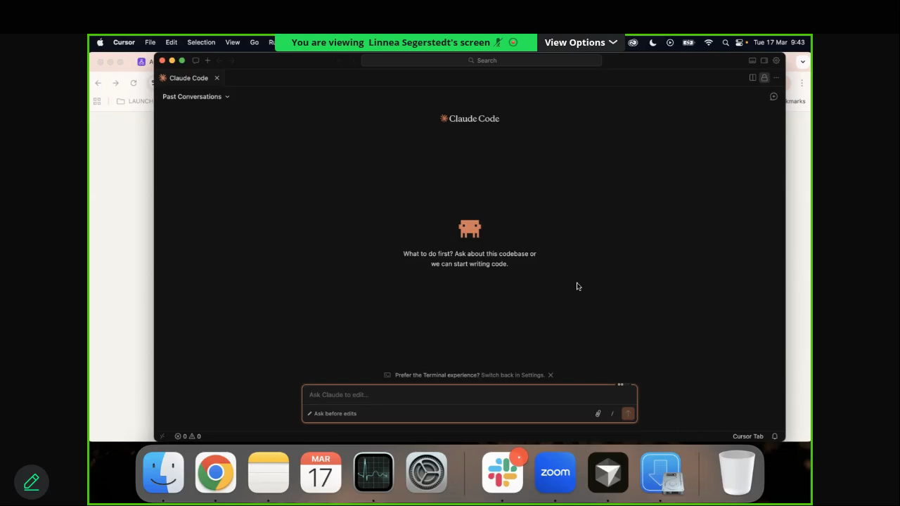
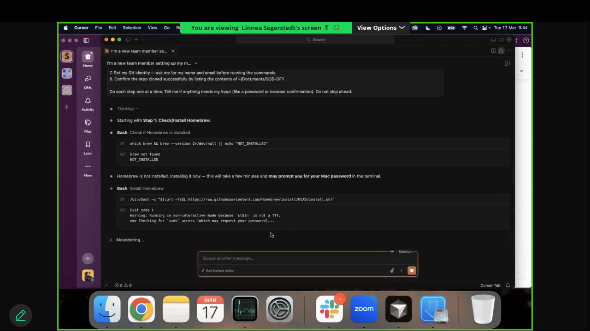
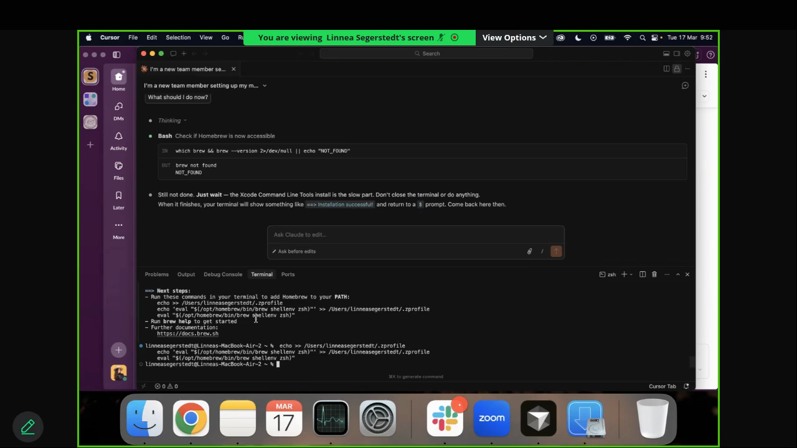
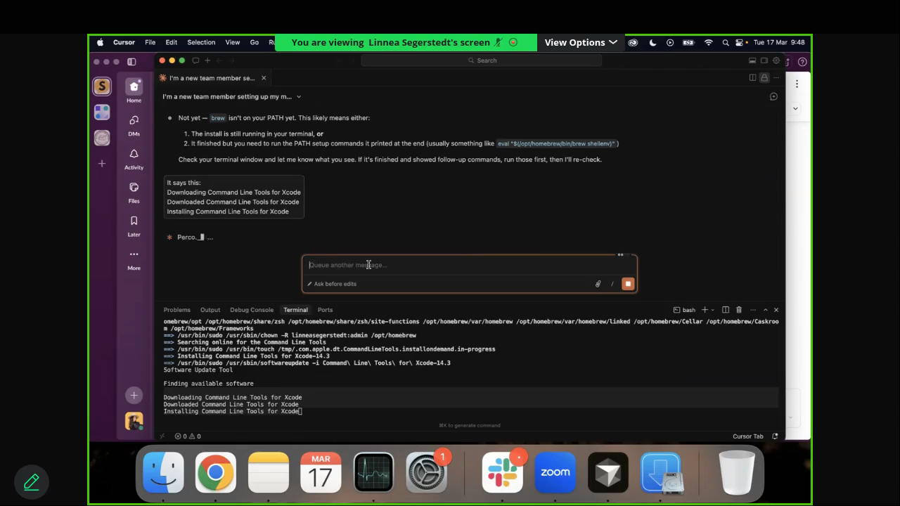
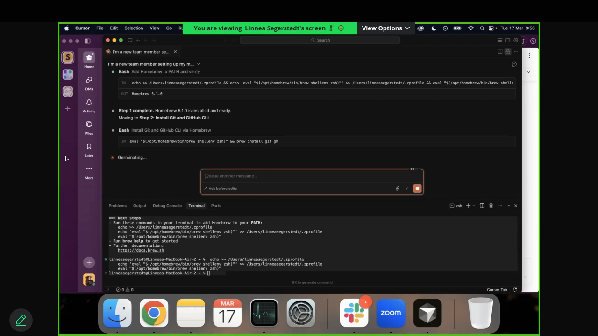
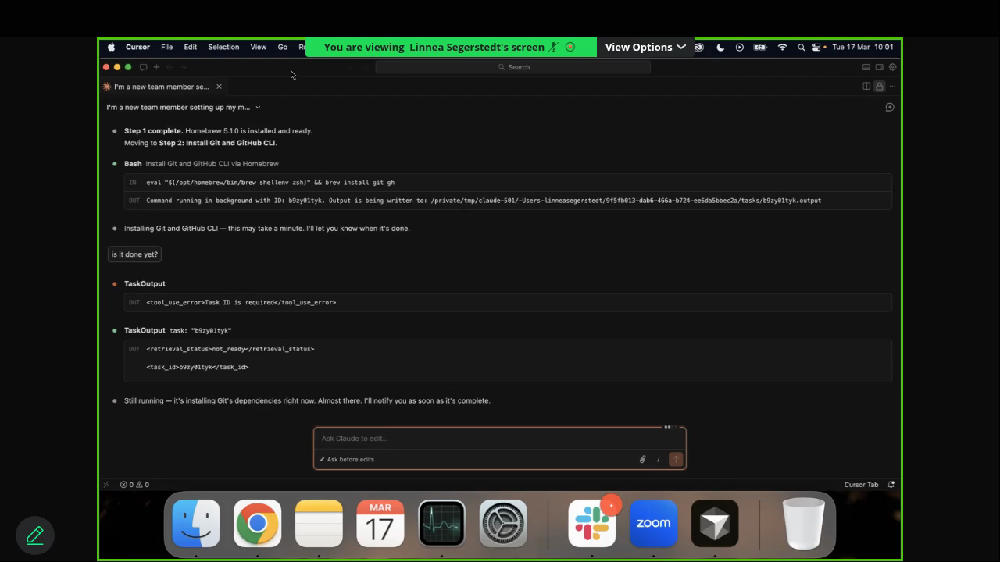

Everything you need to get your machine ready for School of Bots
v2.0 — Updated March 2026Confirm these with your team member before scheduling the setup call:
| Requirement | How to Check | Minimum |
|---|---|---|
| Mac computer | Windows is not supported yet | macOS required |
| Free disk space | Apple menu → About This Mac → Storage | 15 GB free minimum |
| Computer model | Apple menu → About This Mac | M1 chip or newer recommended |
| RAM | Apple menu → About This Mac | 8 GB minimum, 16 GB recommended |
| macOS version | Apple menu → About This Mac | Up to date recommended |
Low disk space = dramatically slower install times. During Linnea's onboarding, the install that normally takes 7–10 minutes took 25+ minutes because her disk was nearly full. If your team member has less than 15 GB free, have them offload files to an external drive or cloud storage before the setup call.
Before the call, ask your team member to:
Complete all of these before scheduling the setup call.
Request their existing username, or have them create an account at github.com.
Verify an available seat at github.com/orgs/School-of-Bots/people. Add one under Settings → Billing if needed.
Use /add-github-member [username] or manually invite at the org people page with Member role.
Send an org invite at console.anthropic.com/settings/members using their work email.
After inviting them, go to console.anthropic.com → click on the user's name → under permissions, enable "Use Workbench and Claude Code" (not just "Use Workbench").
Without this, Claude Code will fail to authenticate and you'll waste 10+ minutes troubleshooting on the call.
Add via Cursor team settings with their work email.
| Key | Where | Details |
|---|---|---|
| Anthropic | console.anthropic.com/settings/keys |
Name format: [name]-sob-dfy. Copy immediately — you can't see it again. |
| Airtable | airtable.com/create/tokens |
Add data.records:read scope. Grant access to the Accounts base. |
DM the team member with:
API keys sent via DM should be deleted from the chat after setup is complete. Never share keys in public channels or commit them to GitHub.
cursor.com in your browser.dmg file from DownloadsGo to System Settings → Privacy & Security → scroll down and click "Open Anyway".
Press Cmd + Shift + X
Claude Code will show a login screen with several options:

This usually means your admin hasn't enabled "Use Workbench and Claude Code" for your account in the Claude Console. Tell your admin — they need to update your org permissions. This is not something you can fix yourself.

This is the longest phase. After you paste the prompt below and hit Enter:
Copy and paste this entire prompt into the Claude Code chat panel:



Claude will say "ALL DONE — Setup is complete" and list the installed versions. If you're not sure, see the "Is it done?" section below.


This actually happened during onboarding — Claude sometimes says "not done" when it actually is, or vice versa. If Claude seems confused or stuck, use these messages:
| If this happens... | Say this to Claude |
|---|---|
| Not sure if it's done | Are all 8 steps complete? List which ones are done and which are still pending. |
| Claude says not done but nothing is happening | Check the terminal output. Did the last command finish? What step are we actually on? |
| You want to verify yourself | Run this and show me the output: brew --version && git --version && gh --version && node --version && ls ~/Documents/SOB-DFY |
| Claude is going in circles | Stop. Let's verify what's actually installed. Run the version checks and show me. |
When Claude needs your Mac password: type it in the terminal area at the bottom. Nothing will appear on screen as you type — this is normal macOS behavior. Just type it and press Enter.
When Claude asks for GitHub browser login: it will open your browser. Sign in, authorize, and come back to Cursor.
"Is setup complete? Show me the contents of ~/Documents/SOB-DFY"
This becomes your daily Cursor project. Open it every morning. Never move or rename the SOB-DFY folder.
context-library, skills, and commands.
This phase involves MCP server setup which sometimes needs troubleshooting. Budget 10–15 minutes, not 5.
Your admin will provide this prompt with the keys already filled in. Copy into Claude Code:
The standard Airtable MCP often fails to install correctly. Use our team's custom setup instead:
The airtable-mcp-server package frequently reports as "not installed correctly" even when it is. We've built a custom integration that works reliably. Your admin will walk you through this step or provide the snippet.
| Connection | Purpose | Status |
|---|---|---|
| Anthropic API | Powers Claude Code | Set up in this phase |
| Airtable | Client data, sprint tracking | Custom integration (admin sets up) |
| Context7 MCP | Documentation lookups | Set up in this phase |
| Notion MCP | Access Notion pages | Set up in this phase |
| Slack MCP | Read/send Slack messages | Optional — see Known MCP Quirks |
| Figma Plugin | Design-to-code | Added in Phase 6 |
| Stripe | Payment data | Only for billing team |
API keys are private. Never share in Slack channels, post publicly, or commit to GitHub. After setup, your admin should delete the DM containing the keys.
echo $ANTHROPIC_API_KEY && echo $AIRTABLE_API_KEY in the terminal prints both keys. If either prints nothing, tell Claude: "My API key is not set. Help me add it to ~/.zshrc and source it."
Paste into Claude Code:
ls ~/.claude/commands/ — you should see a list of command files.
Open Terminal (Ctrl + `) and run:
cd ~/Documents/SOB-DFY && git statusExpected: "On branch main" and "nothing to commit, working tree clean"
echo $ANTHROPIC_API_KEY && echo $AIRTABLE_API_KEYExpected: Both commands print your keys. If either prints nothing, tell Claude: "My API key is not set. Help me add it to ~/.zshrc."
In the Claude Code chat, type:
What files are in this project?Expected: Claude lists folders like context-library, skills, dm-funnel-playbooks, etc.
Run your role's starter command with a real client name (your lead will tell you which one).
Run ls ~/.claude/commands/ to confirm files exist. If empty, go back to Phase 6. If files are there, restart Cursor (Cmd + Q, then reopen).
These phrases work in almost any situation where Claude seems stuck, confused, or unresponsive. Keep this page bookmarked.
MCPs (Model Context Protocol servers) connect Claude to external tools. Some are finicky. Here's what we've learned:
The standard airtable-mcp-server install frequently fails or reports as "not installed correctly." Use our team's custom integration instead — your admin will set this up during onboarding. The team helper script is at scripts/airtable.sh in the repo.
To test if Airtable is working:
curl -s -H "Authorization: Bearer $AIRTABLE_API_KEY" \
"https://api.airtable.com/v0/app0MXWD2LKazuQo1/Team" | head -c 200If you see JSON data, it's working. If you see AUTHENTICATION_REQUIRED, your token is wrong or expired.
Slack MCP requires OAuth setup — it's not just an API key. It can be flaky:
Don't spend more than 10 minutes troubleshooting Slack MCP during initial setup. Move on and come back to it later. It's not required for day-one work.
Generally reliable. If it fails, run npx -y @upstash/context7-mcp in the terminal to verify it installs.
Uses HTTP connection type. Usually works on first try. If it doesn't connect, verify the URL is exactly: https://mcp.notion.com/mcp
git pull origin mainyourname-MM-DD-YYWork normally in Cursor. Run slash commands. Save with Cmd + S. No Git steps needed mid-day.
gh pr create --fillExpected: You see a URL like https://github.com/School-of-Bots/.../pull/XX
Leadership reviews all PRs before 9 AM EST. When you pull main the next morning, approved changes are merged.
| Problem | Fix |
|---|---|
| "Permission denied (publickey)" | Run gh auth login again, choose SSH. If it persists, ask Claude Code for SSH setup help. |
| "brew: command not found" | Close Terminal completely (Cmd + Q), reopen, try brew --version. If still missing, ask Claude to install Homebrew. |
| Claude Code doesn't open | Press Cmd + Shift + X, search "Claude Code", install if missing. Make sure you're signed into the team Cursor account. Restart Cursor. |
| Claude Code auth fails | Your admin needs to enable "Use Workbench and Claude Code" in the Claude Console org settings for your account. This is an admin fix, not yours. |
| API key returns nothing | Tell Claude: "My ANTHROPIC_API_KEY is not set. Help me add it to ~/.zshrc and source it." Have your key ready to paste. |
| Slash command not found | Run ls ~/.claude/commands/. If empty, go back to Phase 6. If files are there, restart Cursor. |
| "gh pr create" gives error | Make sure you pushed your branch first. If "No commits," commit first. If "already exists," you already opened a PR today — you're done. |
| Terminal password invisible | Normal. When macOS asks for your password in Terminal, nothing displays as you type. Type your password and press Enter. |
| Install is extremely slow (25+ min) | Check free disk space: Apple menu → About This Mac → Storage. If under 15 GB free, close apps and clear space. Low storage = slow installs. |
| Accidentally deleted a file | Tell your lead. Git preserves full history — the file can be recovered. |
| Airtable MCP "not installed correctly" | This is a known issue. Don't keep retrying. Use the team's custom Airtable integration instead (see Known MCP Quirks). |
| Shortcut | Action |
|---|---|
| Cmd + Shift + P | Command Palette |
| Cmd + Shift + X | Extensions |
| Cmd + I | Claude Code Chat |
| Cmd + B | File Explorer |
| Ctrl + ` | Terminal |
| Cmd + S | Save |
| Cmd + P | Quick Open File |
| Cmd + L | New Chat (fresh start) |
| Cmd + Q | Quit / Restart |
What's Happening: School of Bots has built an AI agent system that automates repeatable work across all roles. Your job is evolving from task execution to quality control and client strategy using pre-built AI skills.
The One Rule: "Skills are process. Context is knowledge. Keep them separate."
Skills instruct HOW to do tasks (universal across clients). Context provides WHO it's for (client-specific). One skill + client context = scalable system.
You live in Layer 4. Leadership handles Layers 1–3.
Currently in Skills + Workflows stage. Human review always required.
| Tool | What It Is |
|---|---|
| Claude.ai | Brainstorming partner — use separately from working files |
| Cursor | Your command center and daily workspace |
| GitHub | Cloud file storage — all team files version-tracked here |
| Obsidian | Company knowledge and brand voice docs syncing to GitHub |
| Term | What It Means |
|---|---|
| Repository (repo) | Shared project folder on GitHub |
| Commit | Saving a snapshot with a label |
| Push | Uploading commits to GitHub |
| Pull | Downloading latest changes from GitHub |
| Branch | Your personal working copy — stays separate until reviewed |
| Pull Request (PR) | Proposal to merge changes — reviewed before 9 AM |
| Slash command | Shortcut that invokes a skill (e.g., /gs-monday [client-name]) |
| MCP | Connector that plugs Claude into other tools |
Skills are named by what they do, not which client. Most include a cadence prefix:
| Prefix | Meaning |
|---|---|
onboarding- | Used during client onboarding |
daily- | Part of daily rhythm |
weekly- | Part of weekly rhythm |
biweekly- | Runs every two weeks |
monthly- | Part of monthly rhythm |
od- | On-demand — run whenever needed |
No client names in skill names — the client is specified when you invoke the command.
Daily performance tracking, client health, funnel strategy, content direction, revenue analysis
Voice matching, DM funnel copy, social captions, story schedules, email sequences
Client communication, approval tracking, onboarding coordination, daily reporting
Build specs, ManyChat audits, funnel documentation
Full command list: Open slash-command-library.md in Cursor (Cmd + P → search "slash-command").
/[role]-[command] [client-name]Old way: Dump everything → confused output → restart.
New way: Give context in pieces → confirm understanding → next step together → iterate.
"Before you do that, come back to me with your plan first."
/feature-request for improvements or new skill ideas| Safe | Not Safe Yet |
|---|---|
| Slash commands | Mac Mini deployments |
| Built-in skills | Random internet skills |
| Approved MCPs | Autonomous agents |
| Leadership-built skills | PII in prompts |
| Unsupervised client communications |
git pull origin main/feature-requestFollow this Setup Guide. Get your environment working. That's the whole goal.
Practice the morning/evening Git routine. Read slash-command-library.md. Get familiar with your role's commands.
Run your starting commands on 2 clients. Fill the feedback form after each run.
Debrief with your lead. Re-read this handbook. Ask questions.
Brain, brain with hands, the office.
Yes. You're running slash commands and reviewing outputs. The system is designed for non-developers.
Not now. Use /feature-request for ideas.
Maintenance nightmare. One skill + client context = scalable. That's the model.
Don't use it. Fill the feedback form. The skill gets updated. That's the testing cycle.
Open slash-command-library.md in Cursor. Your lead also assigns starting commands during onboarding.
Check your free disk space (Apple menu → About This Mac → Storage). If you're low on space, that's the bottleneck. Close unnecessary apps and clear space. If storage is fine and it's been 30+ minutes, start a fresh chat and paste the prompt again.